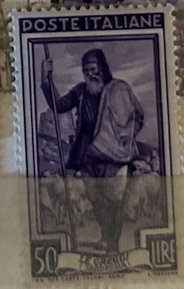
| SOURCE | TITLE| IMAGE MATCH | click to source page |
| eBay | Italy Scott #562 Mint Never Hinged | eBay | 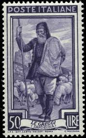 |
| iStock | King Kamehameha Statue On Old Stamp Of Hawaii Stock Photo - Download Image Now - Hawaii Islands, Postage Stamp, King - Royal Person - iStock | 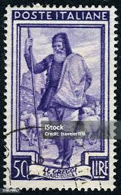 |
| eBay UK | Italy - SG 773 - u/m - 1950 - 50l - Violet - Shepherd | eBay UK | 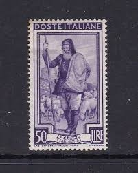 |
| eBay | ITALY 1950 POSTE ITALIANO"LE GREGGI SARDEGNA" 50 LIRE STAMP USED | eBay | 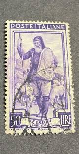 |
| HipStamp | Italy Stamp: Very Old antique used Stamp set #4 Rare- very hard to find. | Europe - Italy, General Issue Stamp / HipStamp | 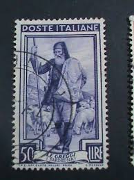 |
| CollectorBazar | a2zKollection ~ Italy 1950 Italy at Work - Shepherd & Watchtower theme Old Issue Stamp # 134/1507/ | 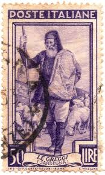 |
| Dreamstime.com | Regional Occupations Stock Photos - Free & Royalty-Free Stock Photos from Dreamstime | 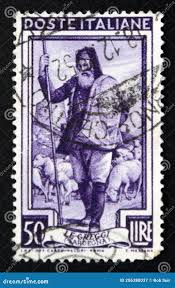 |
| iStock | African Slaves On A Postage Stamp Stock Photo - Download Image Now - USA, Slavery, Postage Stamp - iStock | 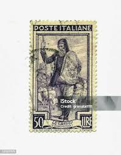 |
| iStock | Italian Postage Stamp Featuring Sardegna Stock Photo - Download Image Now - Art, Arts Culture and Entertainment, Communication - iStock | 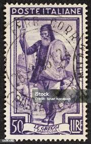 |
| eBay | Italy #562 (A306) - 1950 50 l Shepherd and Flock of Sheep | eBay | 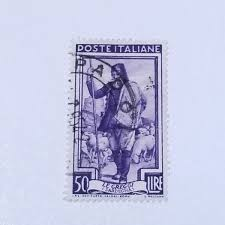 |
| Todocolección | 1950 - italia - yvert 585 - Buy Antique stamps of Italy on todocoleccion | 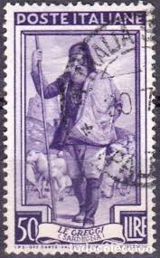 |
| PicClick IT | 25 LIRE LE Arance, Sicilia EUR 19,00 - PicClick IT | 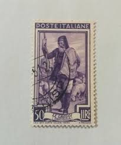 |
| bobshop | Italy - 1950-55 ITALY AT WORK was listed for 1.20 on 27 Apr at 07:16 by TROTSKIE in Cape Town (ID:639534305) | 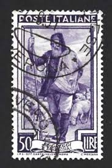 |
| AM PHIL | Price list :: Stamps Price List - Italian Area :: ITALIAN REPUBLIC :: ITALIAN REPUBLIC 1945 -54 USED STAMPS :: 1950 Italy at work :: 1950 Italy at work L. 200 | Used | 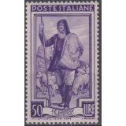 |
| iStock | Old Italian Shepherd With Staff Stock Photo - Download Image Now - Adult, Animal, Herd - iStock | 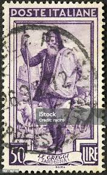 |
| Shutterstock | Italy 1950: Over 1,440 Royalty-Free Licensable Stock Photos | Shutterstock | 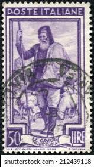 |
| ifs.rs | Stamps Vintage Many Famous People | 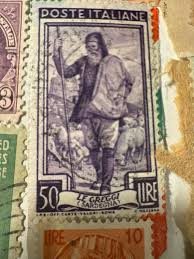 |
| Hello Can anyone tell me the value of these stamps? thanks | 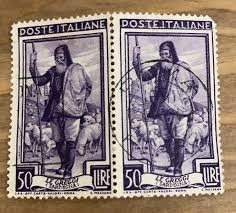 | |
| Todocolección | poste italia, 100 lire, mameli morente, año 194 - Buy Antique stamps of Italy on todocoleccion | 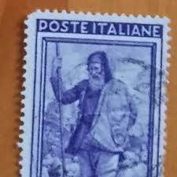 |
| Todocolección | Sellos Antiguos de Italia | página 750 | todocoleccion | 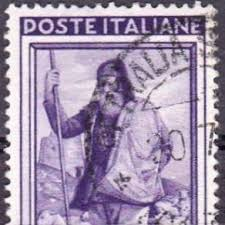 |
| Find Your Stamps Value | Blacksmith, Aosta Valley: Italy at Work Type of 1950 50c Violet blue stamp price, value | 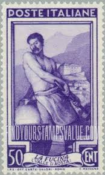 |
| Todocolección | sello poste italiano, xl aniversario della vitt - Buy Antique stamps of Italy on todocoleccion | 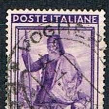 |
| Todocolección | poste italiane - 50 liras pastor - Buy Antique stamps of Italy on todocoleccion | 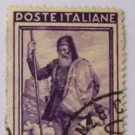 |
| Bob Shop | Italy - Italy 1946 Proclamation of the Republic was sold for 4.00 on 9 Jun at 10:01 by Pietfau in Riviersonderend (ID:615723553) | 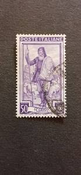 |
| esam.ir | کالا 44) تمبر کلاسیک ایتالیا 100ساله کمیاب | 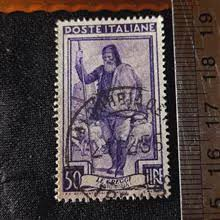 |
| PicClick IT | FRANCOBOLLO 1950 VARIETÀ - 50 lire Italia al lavoro - LE GREGGI SARDEGNA EUR 450,00 - PicClick IT | 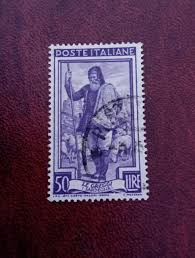 |
| apssii.org | PROPHILA COLLECTION Collezione Di Francobolli Repubblica Ceca - 50 Pezzi Diversi, Per Collezionisti, Marchio Prophila Francobolli Per Collezionisti Qualità Garantita | 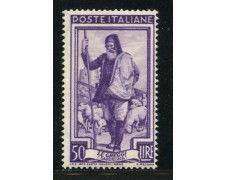 |
| Subito | Pecore in sardegna - Vendita in tutta Italia - Subito.it | 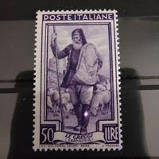 |
| Latinafy | Stamps Germany + Italy + Argentina + Spain | 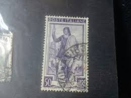 |
| Dreamstime.com | Пастух, Дозорная башня Сардиния, серия «Региональные профессии», ок. 1950 г. Редакционное Изображение - изображение насчитывающей москва, фауна: 236606935 | 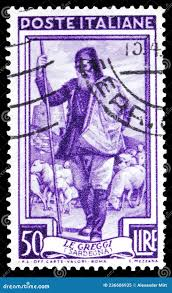 |
| Todocolección | sello poste republica italiane, le gregg 50 lir - Compra venta en todocoleccion | 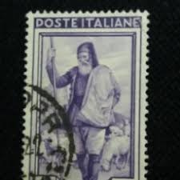 |
| Dreamstime.com | 397 Bard Castle Stock Photos - Free & Royalty-Free Stock Photos from Dreamstime | 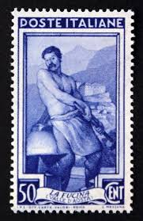 |
| Shutterstock | Lamb Stamp: Over 481 Royalty-Free Licensable Stock Photos | Shutterstock |  |
| CiBaFil | ITALY 1965 Mont Blanc Tunnel MNH** | 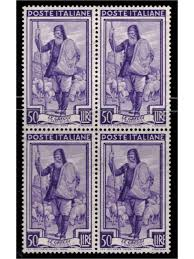 |
| PicClick UK | POSTAGE STAMP : ITALY : POSTE ITALIANE : L'OFFICINA ( PIEMONTE ) - black 1 lira £2.44 - PicClick UK | 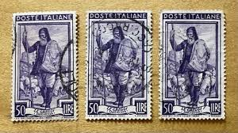 |
| eBay | Work Lire 50 wheel III. variety shifted notching | eBay | 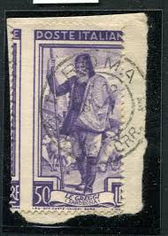 |
| eBay | Italien 1950 Sass. 646-47 Postfrisch 100% Itala bei der Arbeit,Die Herden,Der Ka | eBay | 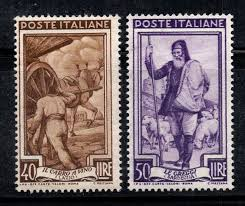 |
| eBay | Italy (1950) - Scott # 562, MNH | eBay | 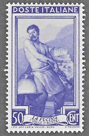 |
| eBay | ITALY SCOTT 562 MH VF - 1950 50l VIOLET ISSUE - BLACKSMITH CV $10.50 | eBay | 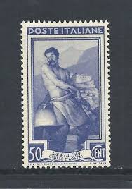 |
| eBay UK | rare italian stamps 1948 | eBay UK | 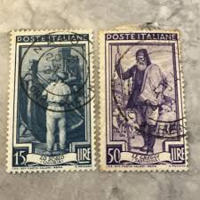 |
| Todocolección | italia yvert 869, 1962 - Buy Antique stamps of Italy on todocoleccion | 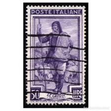 |
| Todocolección | italia. 1953. turismo. rapallo - Buy Antique stamps of Italy on todocoleccion | 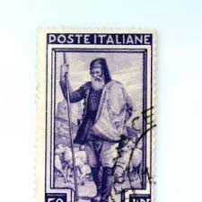 |
| Todocolección | italia nº 2149 (**) - Buy Antique stamps of Italy on todocoleccion | 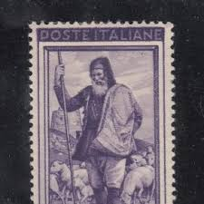 |
| Todocolección | poste italia, 50 lire, le greggi, año 1950. - Buy Antique stamps of Italy on todocoleccion | 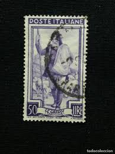 |
| eBay | Italy 1938 #403 Proclamation of the Empire - Fine Used | eBay | 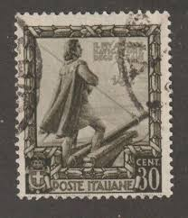 |
| Todocolección | italia - 50 lire - oficios, le greggi (sardegna - Buy Antique stamps of Italy on todocoleccion | 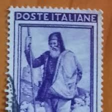 |
| eBay | Postage Stamp : Italy : Poste Italiana : LO Scalo (Liguria) - Blue 15 Lire | eBay | 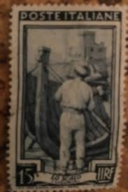 |
| Todocolección | italia - valor facial 600 - castillo, castello - Buy Antique stamps of Italy on todocoleccion | 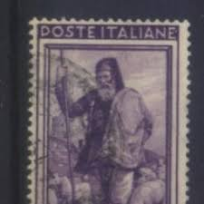 |
| Todocolección | italia - 50 lire - oficios, le greggi (sardegna - Buy Antique stamps of Italy on todocoleccion | 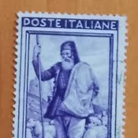 |
| Todocolección | italia ivert nº 1345, matilde serao, periodista - Buy Antique stamps of Italy on todocoleccion | 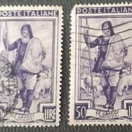 |
| Todocolección | italia - 50 lire - oficios, le greggi (sardegna - Buy Antique stamps of Italy on todocoleccion | |
| Todocolección | italia & marcofilia 1950 (585) - Buy Antique stamps of Italy on todocoleccion | |
| Todocolección | poste italia, 50 lire, le greggi, año 1950. - Kaufen Alte Briefmarken von Italien in todocoleccion | |
| Todocolección | poste italiane, 50 lire, la italia del trabajo, - Buy Antique stamps of Italy on todocoleccion | |
| Todocolección | poste italiane, 50 lire, la italia del trabajo, - Kaufen Alte Briefmarken von Italien in todocoleccion | |
| Todocolección | sello. 1 sello usado. 50 lire. poste italiane. - Buy Antique stamps of Italy on todocoleccion | |
| Todocolección | sello italia la fucina valle d'aosta 50 cent - Buy Antique stamps of Italy on todocoleccion | |
| Todocolección | sello. 1 sello usado. 50 lire. poste italiane. - Kaufen Alte Briefmarken von Italien in todocoleccion | |
| Smithsonian | 10L Crusader Kneeling in Prayer single | National Postal Museum | |
| eBay | Rhodes 19 / 1929 30c Blue Crusader Stamp / Mint Gum Slightly Disturbed / Unused | eBay |